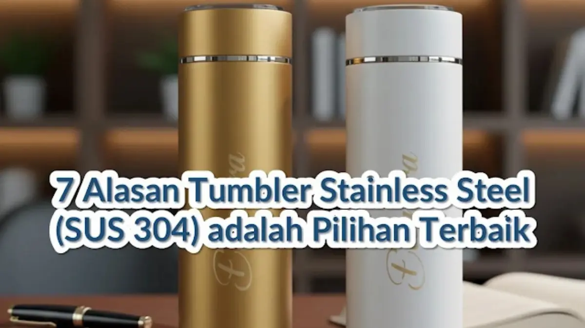

Corporate Gifts ID - Saat memilih material untuk souvenir kantor dan botol minum promosi, pilihannya di pasaran sangat beragam, mulai dari plastik polipropilen hingga aluminium ringan. Namun, ada satu material yang secara konsisten menjadi standar emas untuk kualitas fungsional dan citra profesional perusahaan: Stainless Steel Grade SUS 304. Tumbler berbahan baja tahan karat ini menawarkan kombinasi keamanan konsumsi, ketahanan fisik puluhan tahun, serta daya tarik estetika yang superior untuk merchandise promosi jangka panjang.
Poin Kunci Keunggulan Tumbler Stainless Steel:
- Standar Food-Grade SUS 304: 100% bebas BPA, tidak korosif terhadap asam kopi atau teh, dan tidak meninggalkan aroma logam.
- Double-Wall Vacuum Insulation: Mengunci suhu minuman panas selama 6-8 jam dan minuman dingin dengan es hingga 12-24 jam.
- Branding Permanen & Elegan: Sangat ideal untuk teknik laser engraving beresolusi tinggi yang tidak akan pernah luntur atau terkelupas.
- Eco-Friendly & Reputasi Hijau: Menjadi wujud nyata program ESG perusahaan dalam mengurangi konsumsi botol plastik sekali pakai.
Berikut adalah ulasan mendalam mengenai 7 alasan kuat mengapa tumbler stainless steel layak dipilih sebagai investasi cenderamata terbaik bagi klien VIP, karyawan, maupun mitra strategis perusahaan Anda.
1. Keamanan Terjamin (Food-Grade dan Bebas BPA)
Keamanan konsumsi adalah prioritas mutlak saat memilih cenderamata tempat minum. Tumbler stainless steel yang diproduksi dengan standar industri menggunakan baja SUS 304 (atau seri 18/8 dengan komposisi 18% kromium dan 8% nikel). Formulasi paduan logam ini bersifat inert, artinya tidak akan bereaksi secara kimiawi terhadap cairan apa pun yang dimasukkan ke dalamnya, baik air bersuhu mendidih, kopi asam pekat, sari buah, maupun minuman bersoda.
Selain itu, material stainless steel 100% bebas dari zat kimia berbahaya seperti Bisphenol A (BPA), phthalates, dan mikroplastik yang kerap menjadi kekhawatiran pada botol plastik berkualitas rendah ketika terpapar panas matahari. Memberikan merchandise yang aman bagi kesehatan merupakan bukti nyata kepedulian perusahaan terhadap kenyamanan penerimanya.
2. Kemampuan Menjaga Suhu (Tahan Panas dan Dingin)
Alasan utama para eksekutif dan staf kantor menyukai tumbler stainless steel adalah teknologi insulasi vakum berdinding ganda (double-wall vacuum insulation). Di antara dinding baja bagian dalam dan luar terdapat ruang hampa udara yang menghentikan transfer panas secara konduksi maupun konveksi.
Teknologi termos modern ini memungkinkan tumbler mempertahankan kopi panas nikmat selama 6 hingga 8 jam di pagi hari saat bekerja di kantor ber-AC, atau menjaga es teh dan minuman dingin tetap segar hingga 12 sampai 24 jam di tengah cuaca terik. Bagian luar tumbler juga tetap nyaman digenggam karena tidak akan menghasilkan kondensasi embun basah di meja kerja maupun terasa panas di telapak tangan.
3. Daya Tahan Luar Biasa (Anti Karat dan Anti Penyok)
Berbeda dengan botol plastik yang mudah getas dan retak saat terjatuh, atau botol aluminium tipis yang sangat rentan penyok pada benturan ringan, baja stainless steel memiliki densitas struktural yang luar biasa tangguh. Sifat mekanis baja ini membuatnya mampu menahan gesekan, tekanan di dalam ransel perjalanan, hingga benturan lantai tanpa mengalami kebocoran struktural.
Lapisan pasivasi kromium oksida alami yang terbentuk pada permukaan SUS 304 secara otomatis melindungi bodi tumbler dari bahaya karat dan oksidasi air. Daya tahan fisik bertahun-tahun ini memastikan logo dan pesan promosi korporasi Anda terus terlihat dan dikenang sepanjang masa pakai tumbler tersebut.
4. Memberikan Kesan Premium dan Profesional
Nilai persepsi (perceived value) dari sebuah souvenir sangat menentukan citra brand yang Anda wakili. Ketika seseorang menerima sebuah tumbler berbahan stainless steel dengan bobot yang kokoh dan tekstur bodi yang rapi, persepsi terhadap instansi pengirim akan langsung diasosiasikan dengan kualitas kelas atas, kredibilitas tinggi, dan profesionalisme.
Tersedia dalam berbagai sentuhan akhir, mulai dari matte powder coating yang anti-sidik jari hingga polished metallic glossy yang elegan, tumbler ini serasi diletakkan di ruang rapat direksi, meja kerja minimalis, maupun kabin mobil mewah.
5. Perawatan yang Sangat Mudah dan Higienis
Salah satu kendala terbesar botol minum berbahan plastik adalah kecenderungannya menyerap minyak, noda kopi, dan aroma minuman yang sulit dihilangkan meski sudah dicuci berulang kali. Permukaan dalam stainless steel SUS 304 bersifat non-porous (tanpa pori-pori mikro), sehingga bakteri, jamur, serta residu minuman tidak dapat melekat atau menembus ke dalam struktur material.
Cukup dibilas menggunakan sabun cuci piring lembut dan spons berbusa, tumbler akan kembali bersih higienis tanpa meninggalkan bau sisa kemarin. Kebersihan yang terjaga dengan praktis ini menjadikan tumbler selalu siap digunakan untuk berbagai varian minuman setiap hari.

Presisi grafir laser dan mekanisme tutup kedap bocor menjadikan tumbler stainless steel pilihan favorit untuk merchandise kantor.
Tabel Perbandingan Material Tumbler Souvenir
Untuk membantu tim pengadaan dan purchasing korporat menimbang alokasi anggaran, berikut perbandingan objektif antara stainless steel SUS 304, aluminium ringan, dan plastik bebas BPA:
| Parameter Komparasi | Stainless Steel SUS 304 | Aluminium Anodized | Plastik Bebas BPA |
|---|---|---|---|
| Standar Food-Grade | Sangat Tinggi, aman untuk panas, asam, dan soda | Membutuhkan lapisan inner coating ekstra | Aman, namun tidak disarankan cairan mendidih |
| Retensi Suhu Dingin / Panas | 6-8 jam (panas), 12-24 jam (dingin dengan es) | Kurang dari 2 jam (dinding tunggal) | Kurang dari 2 jam (hanya penahan suhu dasar) |
| Ketahanan Benturan | Sangat kuat, tahan banting, anti penyok | Rentan penyok saat terjatuh di lantai keras | Cukup fleksibel namun rawan retak dan patah |
| Metode Cetak Logo | Grafir laser permanen, UV print full-color | Sablon pad print, grafir ringan | Sablon silinder, stiker decal vinyl |
| Persepsi Citra Eksekutif | Mewah, profesional, bernilai guna tinggi | Cukup sporty namun terkesan ekonomis | Casual, umum untuk event massal berbiaya hemat |
6. Pilihan Kustomisasi Logo yang Mewah
Salah satu keunggulan terbesar bodi logam adalah kompatibilitasnya dengan teknik grafir laser (laser engraving). Sinar laser bertenaga tinggi akan mengikis lapisan terluar cat secara presisi mikron untuk mengekspos kilau perak alami baja di bawahnya. Hasil grafir ini tidak sekadar rapi dan tajam, melainkan bersifat abadi: tidak akan luntur karena gesekan, tidak dapat dikelupas, dan bebas dari risiko pudar akibat pencucian.
Selain grafir laser satu warna monokrom, Anda juga dapat menerapkan teknik UV flatbed printing beresolusi 1440 DPI dengan tinta khusus tahan gores apabila brand identity korporasi Anda mewajibkan warna gradasi penuh yang selaras dengan panduan logo resmi perusahaan.
7. Pilihan Ramah Lingkungan yang Bertanggung Jawab
Di era modern, kriteria Environmental, Social, and Governance (ESG) semakin diintegrasikan ke dalam kebijakan pengadaan korporat di Indonesia. Mengganti cenderamata berbahan plastik sekali pakai dengan tumbler stainless steel yang dapat digunakan kembali puluhan ribu kali adalah langkah nyata mengurangi timbulan sampah anorganik di lingkungan kerja.
Karyawan maupun klien yang membawa tumbler berlogo perusahaan Anda ke tempat kerja, pusat kebugaran, maupun perjalanan dinas luar kota secara otomatis menjadi duta gaya hidup berkelanjutan, memperkuat reputasi perusahaan sebagai institusi yang peduli terhadap kelestarian bumi.
Kesimpulan: Investasi pada Kualitas dan Citra Merek
Memilih tumbler berbahan stainless steel grade SUS 304 bukanlah sekadar pengadaan wadah minum biasa, melainkan keputusan strategis untuk menginvestasikan anggaran promosi pada cenderamata yang benar-benar dipakai setiap hari oleh penerimanya. Keunggulan komprehensif mulai dari keamanan food-grade, isolasi suhu berjam-jam, durabilitas fisik tanpa tanding, hingga estetika grafir mewah menjadikannya standar emas souvenir kantor yang paling diminati perusahaan terkemuka.
Siap menghadirkan cenderamata tumbler stainless steel berkualitas prima dengan personalisasi logo perusahaan Anda- Tim konsultan di CorporateGifts.ID siap membantu menyusun kurasi desain, memilih model botol terbaik, serta menyediakan visualisasi digital mockup 3D secara gratis sebelum Anda memulai proses produksi massal.